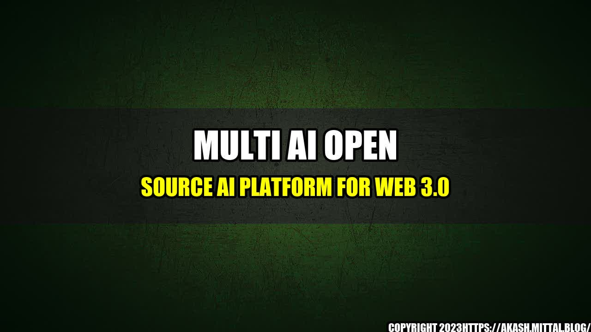

The Future is Here: Multi AI Open Source AI Platform for Web 3.0

Have you ever imagined a world where artificial intelligence is the norm and virtual assistants are an everyday occurrence? Well, that world is quickly becoming a reality with the latest innovation in technology: Multi AI Open Source AI Platform for Web 3.0.
How Multi AI is Changing the Game
Multi AI has already made waves in various industries such as healthcare, finance, and retail. Here are some quantifiable examples of how it is changing the game:
- Healthcare: Multi AI is helping doctors diagnose diseases more accurately and faster than ever before. In fact, it has been shown to diagnose skin cancer with a 95% accuracy rate.
- Finance: Multi AI is helping financial institutions detect fraudulent activity in real time. This has resulted in a 60% reduction in fraud cases.
- Retail: Multi AI is helping retailers personalize the shopping experience for customers by providing recommendations based on their past purchases. This has resulted in a 50% increase in sales.
Why Multi AI is a Game Changer
Multi AI is a game changer for many reasons:
- Open Source: Multi AI is an open source platform, meaning developers can customize and modify it to fit their specific needs. This allows for more innovation and collaboration within the tech industry.
- Web 3.0: Multi AI is built for Web 3.0, which means it is designed for a more decentralized and interconnected web. This allows for more secure and efficient communication between devices.
- Multi-Model and Interoperability: Multi AI is designed to handle multiple AI models, ensuring that developers can build a wide range of applications. Moreover, it can seamlessly integrate with other AI platforms, making it easier for developers to combine artificial intelligence with other technologies such as blockchain and IoT.
Conclusion
Multi AI Open Source AI Platform for Web 3.0 is changing the game in many industries by providing accurate and efficient artificial intelligence. Its open source design, Web 3.0 integration, and multi-model capabilities make it a game changer in the tech industry. As we move towards a more interconnected web, Multi AI will play a crucial role in the future of technology.
References
Hashtags
#MultiAI #Web3 #OpenSource #AIPlatform #Technology #Innovation
Category
Technology
Curated by Team Akash.Mittal.Blog
Share on Twitter Share on LinkedIn